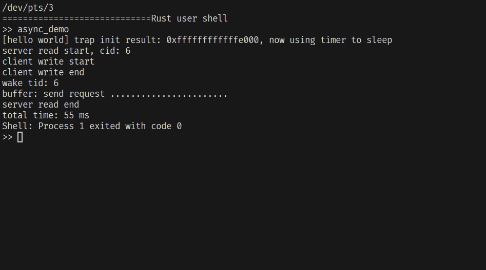
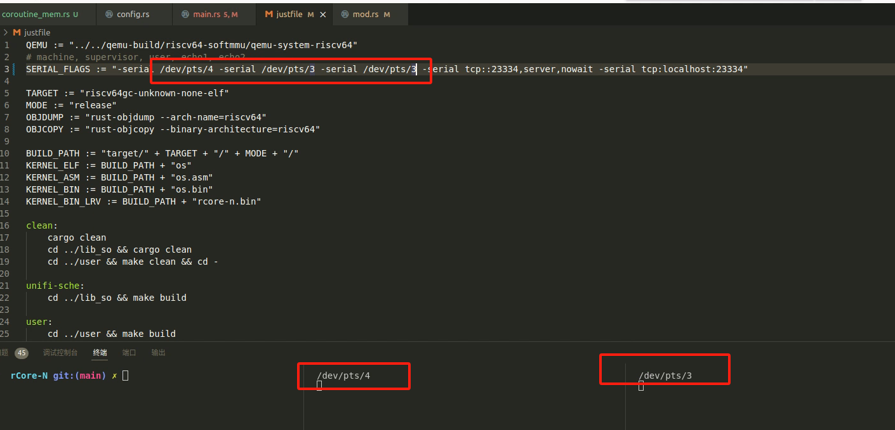
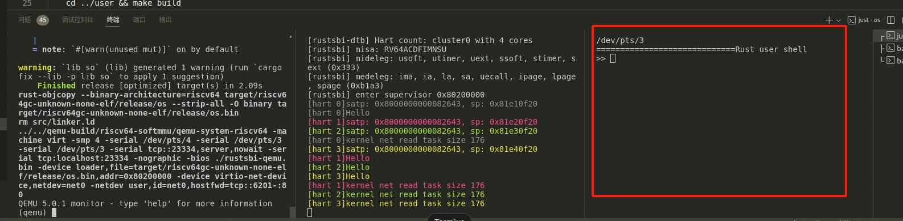

rCore-N (共享调度器 fork) 搭建和踩坑
时间：2024-05-28
注意，这是运行 https://github.com/CtrlZ233/rCore-N （开源操作系统训练营项目 6，共享调度器 rCore-N）的教程，而不是 rv-n-ext-impl 内的 rCore-N https://github.com/duskmoon314/rCore-N 的教程。
关于这两者，共有的教程在 rv-n-ext-impl 文档：使用教程 一章。 这里的一些流程与那一章重合，但我这里会把流程补充完整并梳理清楚。
流程介绍
- risc-v 的用户态中断拓展草案非废除，相应的一些工具尚不支持或者该功能被移除（缺乏用户态中断相关的寄存器、指令、LPIC）
- qemu 未实现用户态中断，所以需要一个添加了该功能的 fork （基于 qemu5）
- LLVM IR 移除了用户态中断实现，而 Rust 的
asm!其实是对 LLVM IR 的内联汇编语法的简单包装，所以需要固定 Rust 工具链到历史版本号
- 由于原 rCore-N 声明只维护 justfile 脚本，所以使用
just run而不是make run来运行 os
- 注意：需要修改
SERIAL_FLAGS中的三个 pts 设备号，它们应指向当前运行的虚拟终端设备号 - justfile 是 just 程序识别的脚本文件，你需要安装 just 程序
1. 安装具有用户态中断的 qemu
# 创建一个文件夹 async-os
mkdir async-os
cd async-os
git clone https://github.com/duskmoon314/qemu.git --depth 1
mkdir qemu-build
cd qemu-build
../qemu/configure --target-list="riscv64-softmmu" --extra-cflags=-Wno-error
make -j
注意这里添加的 --extra-cflags=-Wno-error 传递给 gcc 的编译器参数，如果没有它，编译 qemu 出现警告会无法继续下去。
2. 下载 rCore-N 代码并指定 Rust 工具链
# 在 async-os 下，如果你从上一步来，那么先 cd ..
# 当前测试的提交号为 41796b8
git clone https://github.com/CtrlZ233/rCore-N.git --depth 1
cd rCore-N
# 创建并编辑 rust-toolchain.toml 文件
vim rust-toolchain.toml
# rust-toolchain.toml 内添加以下内容
[toolchain]
profile = "minimal"
channel = "nightly-2023-01-03"
components = ["rust-src", "llvm-tools-preview", "rustfmt", "clippy"]
targets = ["riscv64gc-unknown-none-elf"]
这个工具链文件是由 rustup 识别的，它表示使用文件内的工具链，而不是本地工具链。
对这个文件内容一些解释
- minimal profile 包含 rustc, rust-std 和 cargo
- channel 固定到 2023 年 1 月 3 日的 nightly Rust （代码中使用了 nightly only features）
- components 表示添加一些额外的组件，有了这些组件，你就可以在这个项目中正常使用它们
- 如果你需要固定 RA 版本的话，还可以在这个列表中添加
rust-analyzer—— 需不需要由你的 IDE 配置决定
- 如果你需要固定 RA 版本的话，还可以在这个列表中添加
- targets 表示添加额外针对一些目标平台的 交叉编译工具链
这个工具链设置应用于 os、lib_so、user 这些子目录中的 Rust 项目。
3. 运行 rCore-N （基于 tmux）
当前在 async-os/rCore-N 文件夹下。
在 tmux 中，使用 Ctrl-b 快捷键触发 tmux 相关的功能，比如 Ctrl-b + % 向右分割一个新终端 pane，Ctrl-b + "
在这个右终端 pane 中向下分割一个终端 pane，此时你可以直接控制三个终端。使用 Ctrl-b + 方向键 聚焦于一个终端。
关于 tmux 的简单使用介绍，见我的 博客。
在右侧的两个终端中，它们的当前目录继承了父进程，即 async-os/rCore-N，聚焦它们，并运行 sleep.sh 脚本（比如 ./sleep.sh），
它会将终端清除，并打印当前 pts 设备文件路径。这两个终端作为内核的输出和用户态输出（和输入）。
假设这两个 pts 路径为 /dev/pts/2 （上）和 /dev/pts/3 （下）。
聚焦于左侧终端，使用 vim justfile，修改 SERIAL_FLAGS 中的相应值：
SERIAL_FLAGS := "-serial /dev/pts/2 -serial /dev/pts/3 -serial /dev/pts/3 。注意后两个串口是一样的 pts。
顺便说一句，justfile 中，第一行的 QEMU 变量指定了第一步的 qemu 路径，如果你按照我的项目文件结构，不需要改动，否则需要改成相应的路径。
一切就绪，使用 just run 或者 LOG=INFO just run 编译用户程序和操作系统，初次运行会需要一些时间，比如
- 本地没有安装 rust-toolchain.toml 指定的工具链，则自动安装
- 拉取 crates.io 完整的 registry：由于工具链太旧，不支持 sparse 方式下载 package，所以下载需要一些时间；如果网不好，可以自己去换源
然后在右下角的终端，可以输入用户程序名称来运行程序。这些程序名来自 ../user/src/bin/。如果你使用 LOG=INFO just run，右上角会显示这些程序名。

如果要退出 rCore-N，在 qemu 界面（左侧终端），按 q 和回车（或者直接 Ctrl-d）。
3. 运行 rCore-N （基于 vscode）
我不使用 vscode，这里只放一些成功运行起来的图片，除了终端控制的方式不一样，其余细节是一样的，关键就两点：
- 终端 pts 每次可能不一样，所以需要修改 justfile 的
SERIAL_FLAGS just run运行起来


其他一些记录
qemu 的 CPU 占用接近 100%
目前代码似乎以 spin + 轮询的方式进行任务调度，所以 qemu 将每个核的 CPU 占用到 100% 是正常的。也就是说，多核情况下 rCore-N 会导致 400% CPU 使用。
即使在阶段 2 的练习中，rCore 系统运行起来后，qemu 的 CPU 占用也是 100%。
以上数据仅供参考。
核数小于 4 的机器暂时不能正常运行 rCore-N
这个问题是促使我写这个文章的最大原因，排查了一整天。
我的服务器核数比较小，所以直接运行 just run 并不能显示出 user shell 界面，更别说运行了。
调整内核代码中的 CPU_NUM={1,2,3} 可以调出 user shell 并运行命令； 但不意味着正常系统运行，机器的核数不够至少会造成如下影响（我无法解释，这只是我的一些观察）：
- shell 运行一次某些程序之后，终端也没反应了（不再显示 >>、输入无反应）
最终，我只能在自己的 Windows11 WSL 环境下重新搭建了所有必要的开发环境，在默认的 CPU_NUM=4 的情况下，终于正常运行起来了（本地机器 CPU 数量大于 4）。